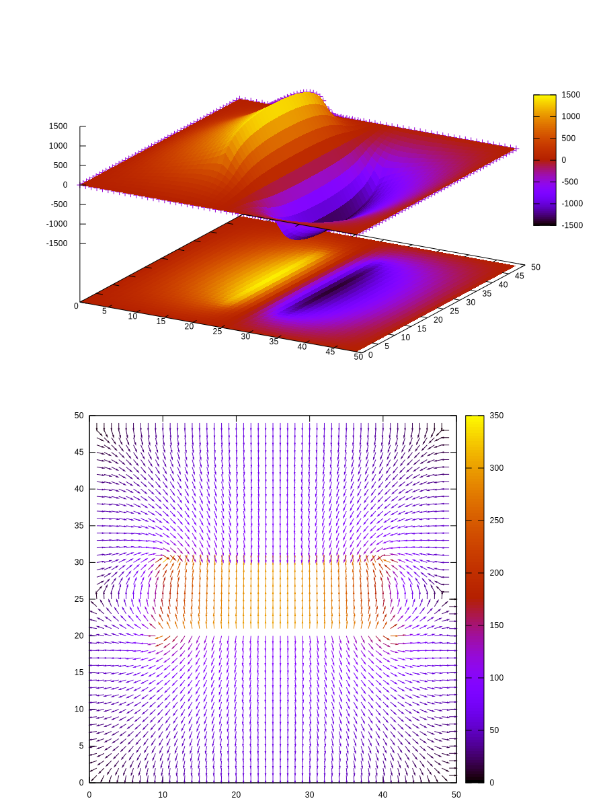

Poisson equation, aka a simulation of a condenser
Table of Contents
1. Imports and type definitions
The first step is to declare the types responsible for storing the data.
The Matrix[T] type encodes a two dimensional matrix into a single array. I decided to fix the grid size with constants W and H; I could have made this generic, but for this example this would have been overkill.
The Lattice type stores the Electric potential v and Electric field e; they're stored as xy matrices representing points on a xy plane. Remember that the ectric field is a vector field, hence why it has the Matrix[(float64, float64)] type.
import math const W = 50 H = 50 type Matrix[T] = array[W*H, T] type Lattice = object v*: Matrix[float64] e*: Matrix[(float64, float64)]
1.1. Utility functions
1.1.1. Matrix and numbers
These are operator overoads for the square bracket access and assign.
They're generic over the T parameter.
The average function takes the neighbors of a cell in the position \((x,y)\) and outputs the average of the neighbors. It's used for the Gauss-Siedel algorithm below.
The squared template ensures fast compile-time substitution of a power (allegedly faster than a power proc).
proc `[]`(l: Matrix, x,y: int): Matrix.T = return l[x + y*W] proc `[]=`(l: var Matrix, x,y: int, val: sink Matrix.T) = l[x + y*W] = val proc average[T: SomeNumber](v: Matrix[T], x,y: int): T = return 0.25 * (v[x-1,y] + v[x+1,y] + v[x,y-1] + v[x,y+1]) template squared(f: SomeNumber): untyped = f * f
1.1.2. Lattice initialization, print and export
The initLattice function takes another function of the distribution of the original charges as a parameter to initialize the lattice potential. This is also step 0 of the Gauss-Siedel algorithm used for the integration later.
The print function can be used to console debug a lattice.
The function toFile outputs the current lattice into two filenames, one for the electric field, the other for the potential. These files are used to draw the plot with gnuplot.
proc initLattice(density: proc (x,y: int): float64): Lattice = var init = Lattice() for y in 0..<W: for x in 0..<H: init.v[x, y] = density(x, y) return init proc print(l: Lattice) = for y in 0..<H: echo l.v[(y*H)..(y*H + W)] proc toFile(l: Lattice, filename: string) = var f = open(filename & ".dat", fmWrite) var e = open(filename & "_e.dat", fmWrite) for x in 0..<W: for y in 0..<H: f.write(l.v[x,y], " ") let (ex, ey) = l.e[x,y] let lx = sqrt(ex*ex + ey*ey) let alpha = arctan2(ey, ex) let dx = if lx == 0.0: 0.0 else: ex/lx let dy = if lx == 0.0: 0.0 else: ey/lx e.writeLine(x, " ", y, " ", dx, " ", dy, " ", lx) f.write("\n") f.close() e.close()
2. Electric field calculation
This function uses the forward difference method to calculate the electric field from the electric potential. Recall that the relationship between the electric field and potential is:
\[ \vec{E} = -\nabla V = \left(-\frac{\partial V}{\partial x} , -\frac{\partial V}{\partial y}\right)\]
Thus the two partial derivatives can be discretized using a simple partial difference operator \(\Delta_h\) with step size \(h=1\):
\[E_x = \Delta_1(-V)_x = - (V_{x+1} - V_x) = V_x - V_{x+1}\]
proc generateEField*(f: var Lattice) = for x in 1..<W: for y in 1..<H: f.e[x,y] = (f.v[x-1, y] - f.v[x,y] , f.v[x, y-1] - f.v[x, y])
3. Initial states examples
oppositeChargedPlates simulates a condenser with one positive charged plate and another negatively charged plate. The plates are finite to allow the visualization of a border effect.
singleCharge simulates a single charge in the middle of the plane.
oppositeChargesOnDiagonal puts two strong opposite charges on one diagonal.
proc oppositeChargedPlates*(x, y: int): float64 = if x >= (W div 5) and x <= (4*W div 5): if y == (2*H div 5): return 100.0 elif y == (3*H div 5): return -100.0 else: return 0.0 proc singleCharge*(x, y: int): float64 = if (x == W div 2) and (y == H div 2): return 100.0 else: return 0.0 proc oppositeChargesOnDiagonal*(x, y: int): float64 = if (x == 2*W div 3) and (y == 2*H div 3): return 1000.0 elif (x == W div 3) and (y == H div 3): return -1000.0
4. Main algorithm
4.1. Problem setup
We simulate the condenser setup (oppositeChargedPlates), setting an alias of density to the function.
Secondly, we initalize the lattice with the chosen charged density function, we set the initial diff error and the ending tolerance.
We save the initial configuration to the start.dat file. Note that, since we didn't calculate the elecric field, the start_e.dat file is pretty useless.
let density = oppositeChargedPlates var field = initLattice(density) diff = 1.0 i = 0 const tolerance = 1e-5 field.toFile("start")
4.2. Gauss-Siedel algorithm
The algorithm is an iterative algorithm that tries to increase accuracy until convegence to a set tolerance.
In particular, we want to solve the following PDE for a given density \(\rho(x,y)\):
\[ \nabla^2V(x,y) = -\rho(x,y) \quad\Longleftrightarrow\quad \frac{\partial^2 V}{\partial x^2} + \frac{\partial^2 V}{\partial y^2} = -\rho(x,y)\]
Using partial differences the problem discretizes, after some calulations, to:
\[V^{(t+1)}_{x,y} = \frac{1}{4}\left(V^{(t)}_{x+h, y} + V^{(t)}_{x-h, y} + V^{(t)}_{x, y+h} + V^{(t)}_{x. y-h}\right) + \rho(x,y)\]
Where whe set constants equal to 1 to simplify the numerical problem; \(V^{(t)}\) is the potential at time step \(t\), and a grid size of \(h=1\) was chosen, as before.
After this updating step, we also update the error term. In order to calculate this error we employ a standard matrix Frobenius norm, updating the error if it's less than the previous error:
\[||V^{(t)} - V^{(y+1)}|| = \sum_i\sum_j \left(V^{(t)}_{ij} - V^{(t+1)}_{ij}\right)^2\]
The error should always be decreasing, since for this particular problem the Gauss-Siedel algorithm converges. A sanity check is employed nonetheless.
After the iterating algorithm is over, the electric field is calculated and the files are saved.
while diff > tolerance: if i > 15000: echo "solution didn't converge; err = " & $diff break var newField = field errSquared = 0.0 for x in 1..<(W-1): for y in 1..<(H-1): newField.v[x,y] = field.v.average(x,y) + density(x,y) errSquared += (newField.v[x,y] - field.v[x,y]).squared() diff = min(diff, abs(diff - sqrt(errSquared))) field = newField inc i echo "The algorithm converged after " & $i & " steps" field.generateEField() field.toFile("ending")
5. Putting the code together
1: 2: import math 3: 4: const 5: W = 50 6: H = 50 7: 8: type Matrix[T] = array[W*H, T] 9: 10: type Lattice = object 11: v*: Matrix[float64] 12: e*: Matrix[(float64, float64)] 13: 14: 15: proc `[]`(l: Matrix, x,y: int): Matrix.T = 16: return l[x + y*W] 17: 18: proc `[]=`(l: var Matrix, x,y: int, val: sink Matrix.T) = 19: l[x + y*W] = val 20: 21: proc average[T: SomeNumber](v: Matrix[T], x,y: int): T = 22: return 0.25 * (v[x-1,y] + v[x+1,y] + v[x,y-1] + v[x,y+1]) 23: 24: template squared(f: SomeNumber): untyped = f * f 25: 26: 27: proc initLattice(density: proc (x,y: int): float64): Lattice = 28: var init = Lattice() 29: for y in 0..<W: 30: for x in 0..<H: 31: init.v[x, y] = density(x, y) 32: return init 33: 34: proc print(l: Lattice) = 35: for y in 0..<H: 36: echo l.v[(y*H)..(y*H + W)] 37: 38: proc toFile(l: Lattice, filename: string) = 39: var f = open(filename & ".dat", fmWrite) 40: var e = open(filename & "_e.dat", fmWrite) 41: for x in 0..<W: 42: for y in 0..<H: 43: f.write(l.v[x,y], " ") 44: let (ex, ey) = l.e[x,y] 45: let lx = sqrt(ex*ex + ey*ey) 46: let alpha = arctan2(ey, ex) 47: let dx = if lx == 0.0: 0.0 else: ex/lx 48: let dy = if lx == 0.0: 0.0 else: ey/lx 49: e.writeLine(x, " ", y, " ", dx, " ", dy, " ", lx) 50: f.write("\n") 51: f.close() 52: e.close() 53: 54: 55: 56: proc generateEField*(f: var Lattice) = 57: for x in 1..<W: 58: for y in 1..<H: 59: f.e[x,y] = (f.v[x-1, y] - f.v[x,y] , f.v[x, y-1] - f.v[x, y]) 60: 61: 62: proc oppositeChargedPlates*(x, y: int): float64 = 63: if x >= (W div 5) and x <= (4*W div 5): 64: if y == (2*H div 5): return 100.0 65: elif y == (3*H div 5): return -100.0 66: else: return 0.0 67: 68: proc singleCharge*(x, y: int): float64 = 69: if (x == W div 2) and (y == H div 2): return 100.0 70: else: return 0.0 71: 72: proc oppositeChargesOnDiagonal*(x, y: int): float64 = 73: if (x == 2*W div 3) and (y == 2*H div 3): return 1000.0 74: elif (x == W div 3) and (y == H div 3): return -1000.0 75: 76: 77: 78: let density = oppositeChargedPlates 79: 80: var 81: field = initLattice(density) 82: diff = 1.0 83: i = 0 84: 85: const tolerance = 1e-5 86: 87: field.toFile("start") 88: 89: 90: while diff > tolerance: 91: if i > 15000: 92: echo "solution didn't converge; err = " & $diff 93: break 94: 95: var 96: newField = field 97: errSquared = 0.0 98: 99: for x in 1..<(W-1): 100: for y in 1..<(H-1): 101: newField.v[x,y] = field.v.average(x,y) + density(x,y) 102: errSquared += (newField.v[x,y] - field.v[x,y]).squared() 103: 104: diff = min(diff, abs(diff - sqrt(errSquared))) 105: field = newField 106: inc i 107: 108: echo "The algorithm converged after " & $i & " steps" 109: field.generateEField() 110: field.toFile("ending") 111:
6. Plotting
Using Gnuplot to plot the potential and the electric field
set terminal svg size 900,1200 set output 'potential.svg' set pm3d at bs set hidden3d set size ratio 1 set multiplot layout 2,1 set nokey splot 'ending.dat' matrix with p plot 'ending_e.dat' using 1:2:3:4:5 with vectors lc palette unset multiplot
